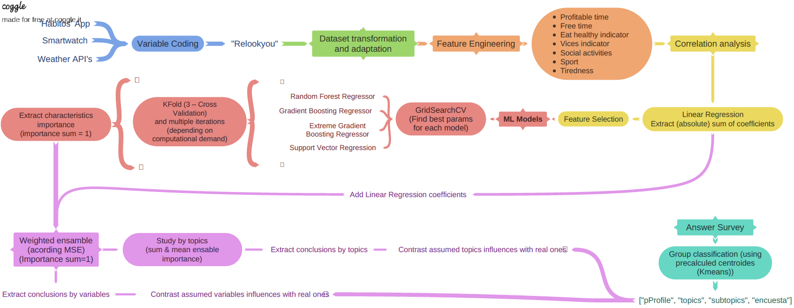
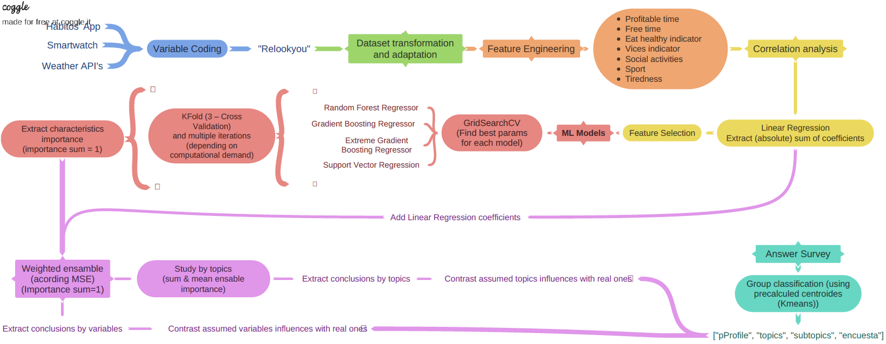

“Influence Factors Analysis on Personal Happiness:
A Machine Learning Approach Using Multidimensional Data"
In this groundbreaking work, we delve into the mysteries of personal happiness using multidimensional data and machine learning techniques. What factors influence people's happiness in different situations and contexts? How can we understand and predict happiness? These are some of the questions we seek to answer.
By immersing ourselves in two key datasets, 'Survey' and 'Personal,' we explore these inquiries. 'Survey' involves 153 participants sharing their perceptions of happiness through a comprehensive survey. We apply clustering techniques to discover similarities among respondents, categorizing them into groups based on their criteria. Additionally, we use descriptive statistics and supervised machine learning models to characterize groups and reveal hidden patterns.
In 'Personal,' we study longitudinal data from real participants, unraveling how their daily activities influence their subjective happiness. Through an ensemble of various supervised machine learning algorithms, we identify the impact of different activities on their personal well-being.
The project illustrates how the combination of data and technology can reveal surprising connections between our actions and emotions. You'll discover discrepancies between perceptions based on segmentation ('Survey') and actual influences uncovered in 'Personal'. Furthermore, you will confirm that determining factors of happiness can vary widely among individuals, although elements like fatigue, external factors, and free time tend to be universally significant.
This project, recognized for its excellence and selected as a candidate for honors with a grade of 9.8, will guide you through a fascinating journey to understand personal happiness, challenging your perceptions, and enriching your understanding of human psychology.

 
